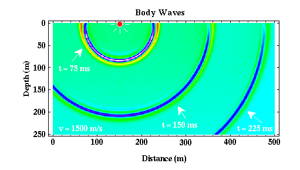
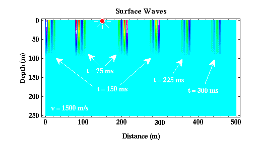

Seismic Waves
Waves that propagate through the earth as elastic waves are referred to as seismic waves. There are two broad categories of seismic waves: body waves and surface waves.
- Body waves - These are elastic waves that propagate through the Earth's interior. In reflection and refraction prospecting, body waves are the source of information used to image the Earth's interior. Like the ripples on the surface of the pond example described previously, body waves propagate away from the source in all directions. If the speed at which body waves propagate through the Earth's interior is constant, then at any time, these waves form a sphere around the source whose radius is dependent on the time elapsed since the source generated the waves. Shown below is a cross section through the earth with body waves radiated from a source (red circle) shown at several different times. In the figure below, ms stands for milli-seconds. One milli-second equals one one-thousandth of a second (i.e., there are one thousand milli-seconds in a second).

| Click Here for Movie Version (127Kb) |
|---|
The color being plotted is proportional to the amplitude of the body wave. Light blue-green is zero amplitude, red is a large positive amplitude, and purple is a large negative amplitude. Notice that this plot is explicitly constructed in a reference frame that fixes time, thus allowing us to examine the spatial variations of the seismic wave. At any given time, notice that the wave is circular with its center located at the source. This circle is, of course, nothing more than a two-dimensional section of the spherical shape the wave has in three-dimensions.
Seismic body waves can be further subdivided into two classes of waves: P waves and S waves.
- P Waves - P waves are also called primary waves, because they propagate through the medium faster than the other wave types. In P waves, particles consistituting the medium are displaced in the same direction that the wave propagates, in this case, the radial direction. Thus, material is being extended and compressed as P waves propagate through the medium. P waves are analogous to sound waves propagating through the air.
- S Waves - S waves are sometimes called secondary waves, because they propagate through the medium slower than P waves. In S waves, particles consistituting the medium are dispaced in a direction that is perpendicular to the direction that the wave is propagating. In this example, as the wave propagates radially, the medium is being deformed along spherical surfaces.
Most exploration seismic surveys use P waves as their primary source of information. The figure shown above could, however, represent either P or S waves depending on the speed chosen to generate the plot.
- Surface Waves - Surface waves are waves that propagate along the Earth's surface. Their amplitude at the surface of the Earth can be very large, but this amplitude decays exponentially with depth. Surface waves propagate at speeds that are slower than S waves, are less efficiently generated by buried sources, and have amplitudes that decay with distance from the source more slowly than is observed for body waves. Shown below is a cross section through a simplified Earth model (the speed of wave propagation is assumed to be constant everywhere) showing how surface waves would appear at various times in this medium.

Like body waves, there are two classes of surface waves, Love and Rayleigh waves, that are distinquished by the type of particle motion they impose on the medium. For our purposes, it is not necessary to detail these differences. Suffice it to say that for virtually all exploration surveys, surface waves are a form of noise that we attempt to suppress. For reflection surveys in particular, suppression of surface wave energy becomes particularly important, because the amplitudes of surface waves generated from shallowly buried sources are often observed to be larger than the amplitudes of the body waves you are attempting to record and interpret. For refraction surveys, surface waves are less of a problem because we are only interested in the time of arrival of the first wave. Surface waves are never the first arrival. In all of the remaining discussion about seismic waves, we will consider only body waves.
Seismology
- Simple Earth Model: Low-Velocity Layer Over a Halfspacepg 11
- Head Wavespg 12
- Records of Ground Motionpg 13
- Travel-time Curves for a Simple Earth Modelpg 14
- First Arrivalspg 15
- Determining Earth Structure from Travel Timespg 16
- Derivation of Travel Time Equationspg 17
- High-Velocity Layer Over a Halfspace: Reprisepg 18
- Picking Times of Arrivalspg 25
- Wave Propagation with Multiple Horizontal Layerspg 26
- Travel Time Curves from Multiple Horizontalpg 27
- Hidden Layerspg 28
- Head Waves from a Dipping Layer: Shooting Down Dippg 29
- Head Waves from a Dipping Layer: Shooting Up Dippg 30
- A Field Procedure for Recognizing Dipping Bedspg 31
- Estimating Dips and Depths from Travelpg 32